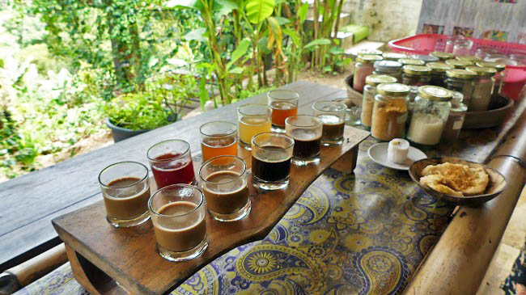
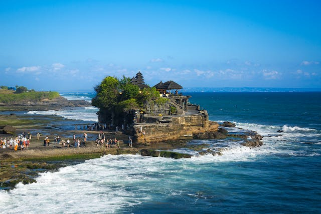
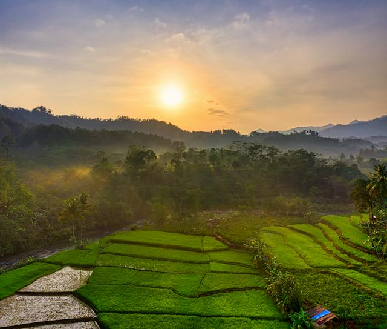
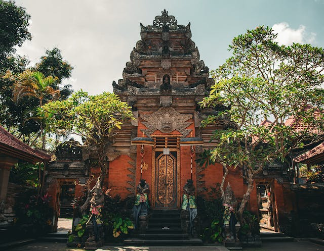

A Zöld-foki szigetek az Atlanti-óceán gyöngyszeme, Afrikától mintegy 450 km-re, nyugatra fekszik. Egzotikus, érintetlen, turisták által alig felfedezett terület, ahol mindig meleg és napsütéses klíma és kristálytiszta, néhol smaragdzöld, néhol azúrkék tenger fogadja az ide látogatót. A szigeteket körülölelő Atlanti-óceán különleges világa kék bálnákkal, palackorrú delfinekkel és teknősökkel igazi kuriózum, szélfútta fehér homokos strandjai lenyűgözik a nyaralni vágyókat. Érdemes ellátogatni ide, ahol télen is nyár fogadja és ahol felfedezheti a búvárok, szörfösök paradicsomát!
A Nyugat-Afrika partjainál, a Zöld-fok és a szenegáli partok előterében fekvő tíz nagyobb és öt kisebb tagból álló vulkanikus szigetcsoport (4033 km2) évszázadokon át Portugália fennhatósága alá tartozott, jelenleg önálló köztársaság. A szigetcsoport fővárosa a mintegy 100.000 fős lakosú Praia, amely Santiago szigetén fekszik, ám idegenforgalmi szempontból legjelentősebb Sal szigete, ahova a charterjáratok közlekednek. A szigeteket keskeny síkság keretezi, a mögöttes fennsíkok vulkáni kúpokat hordoznak. Eső meglehetősen ritkán esik, viszont állandó szél fúj, amely ideális a vízi sportok szerelmeseinek, főként a szörfösöknek. A trópusi szavanna éghajlatú szigetek ültetvényein főleg banánt, datolyát, cukornádat valamint kávét termesztenek exportra. Az ország lakosainak száma mintegy 520.000 fő, kisebb része a behurcolt rabszolgák leszármazottaiból, nagyobb része mulattokból áll. A népesség főként az idegenforgalomból és a halászatból él.
A kis ország földrajzi helyzetének köszönhetően széttagolt, a szigetek között a legfőbb összeköttetést a kompok és hajók, valamint a kisebb repülőjáratok jelentik (Praia és Sal között naponta közlekedik repülőjárat).
Pénzneme
Escudo (CVE), 1 euró = 110 CVE 2023-ban, de a minndennapokban 100 a váltószám
Időeltolódás
Magyarországhoz képest -2 óra
Nyelv
Kreol és portugál, de az angolt is egyre többen beszélik, főleg ahol a turizmus jelen van
Vízum
30 napnál nem hosszabb, turizmus céljából történő látogatás esetén kb. 31 EUR az EASE, amit "repülőtéri biztonsági adó" néven emlegetnek, de lényegében hívhatjuk vízumdíjnak is. Ezen felületen tudsz online regisztrálni: EASE REGISZTRÁCIÓ
Utazás
Ex-portugál gyarmat lévén a közelmúltig a legegyszerűbb lehetőség Lisszabonon keresztül a TAPPortugal légitársasággal volt, de 2023-tól már Bécsből is indulnak közvetlen járatok, illetve Smartwings charterek Pozsony és Prága városokból is, attól függően, hogy melyik szigetre tervezel utazni. A Turisták körében Sal szigete a legnépszerűbb, így oda a legkönnyebb járatot találni.
Mi 2017 decemberében voltunk egy szerencsés véletlennek köszönhetően, ugyanis 15.000 Ft-nak megfelelő összegért elárazott repjegyet sikerült kifognunk Sao Vicente - Budapest útvonalra. Nem sokat gondolkodtunk, hogy mi tévők legyünk, azonnal le is foglaltuk. Több hétnyi keresgélés után Stuttgartból találtunk egy akciós TUI nyaralójáratot, ami Boa Vista szigetére repült, így végül retúr 60 ezer magyar forintból sikerült egy közel két hetes 3 szigetes kiruccanást csinálnunk.
UTAZÓS TIPP:
Foglalás előtt használj árösszehasonlító oldalakat, mint a Google Flights vagy a Skyscanner, hogy garantáltan a legjobb áron utazhass!
Meglátogatott régiók:

Boa Vista
Boa Vista, a Zöld-foki Köztársaság északi részén található, ahol lenyűgöző trópusi tájak, kiterjedt homokdűnék és gyönyörű tengerpartok teszik egyedivé. A sziget neve portugálul "szép kilátás"-t jelent, és ez tökéletesen tükrözi az itteni mesés panorámát.
Éghajlata trópusi, ami azt jelenti, hogy egész évben kellemesen meleg. A sziget a szezonális szélnek köszönhetően ideális célpont a szörfösök és a kitesurfosok számára. A kék lagúnák és a fehér homokos partok a tengeri élővilágban gazdagok, így a búvárkodás és a snorkeling is népszerű tevékenységek.
A Viana sivatag, az egyik jellegzetes terület, lenyűgöző homokdűnéket kínál, ahol a sárga homok finoman érintkezik a kék éggel. A Santa Monica part, a sziget legnagyobb strandja, hosszú, finom homokjával a naplemente idején különösen lenyűgöző.
A szigeten található Sal Rei városka érintetlen, hagyományos charmjával vonzza a látogatókat. A városban a pastell színű házak és a helyi piac a kulturális gazdagság megnyilvánulása. Az ételek terén a friss tenger gyümölcsei és a helyi konyha specialitásai, például a Cachupa, a látogatókat kulináris utazásra hívják.
Bali programlistája kb. végtelenhez közelít, így pár mondatban leírjuk, hogy mi merre jártunk:
-
Sangeh Monkey Forest
Az Ubudi Monkey Forest utazós alternatívája, sokkal kevesebb látogató és barátságosabb árak jellemzik. Ubudtól északabbra található a trópusi dzsungel hangulatos ösvényein sétálva a látogatók szorosan közelről figyelhetik meg a majmokat. Az ősi Pura Bukit Sari templom, mely a terület középpontjában található, tovább fokozza a helyszín szellemi és történelmi vonzerejét.

Sangeh Monkey Forest - Bali -
Taman Ayun Temple
A templomot a 17. században építették Mengwi dinasztiája alatt, és a Mengwi királyság egykori főtemplomaként ismert. A Taman Ayun szó szó szerint azt jelenti "gyönyörű kert", és a templom neve a csodálatos kertekre utal, amelyek a templom körül terülnek el. A Taman Ayun templomot Balin belül az UNESCO által világörökségi helyként ismerték el, mivel fontos példája a balinéz templomépítészetnek és a tradicionális kerttervezésnek.

Taman Ayun Temple - Bali -
Kopi Luwak Baturiti
A Kopi Luwak, vagy más néven Luwak kávé, egy különleges és ritka kávéfajta, melyet a világ kevés régióiban termesztenek. Az egyedi jellegét az adja, hogy a kávébabokat a cibetmacska kiválogatja és elfogyasztja, majd az emésztőrendszerén keresztül válogatottan üríti ki, mielőtt a kávébabokat feldolgoznák és elkészítik belőlük a kávét. A Baturitibe a belépés 500 Ft-nak megfelelő IDR volt, ezért cserébe 12 féle helyi kávét és teát lehetett kostólni, meg még különféle nasikat is felszolgáltak.
 Kopi Luwak Baturiti - Bali -
Ulun Danu Beratan
Az Ulun Danu Beratan templom Bali északi részén található a Bratan-tó partján, egy mágikus környezetben. A templomot a tó közepén fekvő kis szigeten építették fel, ami gyönyörű látványt nyújt a víz tükrében. Az Ulun Danu Beratan templom a hindu vallás egyik legfontosabb szentélye Bali szigetén és nem csak vallási, hanem építészeti szépsége miatt is népszerű úti cél.

Ulun Danu Beratan kapuja - Bali -
Tanah Lot
Bali egyik ikonikus szent helye, egy sziklára épült hindu tengerparti templom, melyet az Indiai-óceán hullámai körülvesznek. A naplemente ideális időpontja a látogatásnak, amikor a templom vörösesbarna sziklái kontrasztban állnak a lenyugvó nap arany színű sugarainak tükröződésével. A templomot a tengeri isten, Baruna tiszteletére emelték, és a hely hírnevét a varázslatos környezetének és a tengerparti sziklákon elhelyezkedő szent kígyó kövületének köszönheti.
 Tanah Lot - Bali -
Tegallalang
Tegallalang rizsteraszai Bali középső részén helyezkednek el, lenyűgöző látványt nyújtva a meredek domboldalakon terülő szemet gyönyörködtető rizsföldekből. Bali egyik legikonikusabb látványosságaként a rizsteraszok hagyományos balinéz mezőgazdasági művelésre emlékeztetnek, és jól tükrözik a sziget lakóinak kapcsolatát a természettel. A rizsteraszok nemcsak a mezőgazdaságban fontosak, hanem kulturális és vallási szempontból is, hiszen a helyiek itt rendezik meg a rizs termése utáni hálátadó ünnepségeiket.
 Rizsterasz napfelkeltében - Bali -
Ubud
Bali kulturális szíve, egy varázslatos város, mely a trópusi dzsungel és a rizsföldek ölelésében fekszik. A város kis mérete ellenére rendkívül gazdag kulturális élményeket kínál a látogatóknak. Ubud híres az élénk piacairól, ahol kézműves termékeket, helyi művészeti alkotásokat és hagyományos indonéz csecsebecséket lehet vásárolni. A város számos művészeti galériát és műhelyt is felvonultat, ahol a helyi és nemzetközi művészek bemutatják munkáikat.
 Ubud - Bali -
Hagyományos balinéz táncok
A hagyományos balinéz táncok gyakran tükrözik a hindu vallás és a balinéz mitológia témáit. Két fő típusa van: a legong és a barong tánc. A legong táncok a fiatal lányok kifinomult mozdulatairól és hagyományos balinéz ruházatukról ismertek, míg a barong tánc egy drámai előadás, amelyben jó és gonosz erők küzdenek egymás ellen.

Balinéz tradicionális tánc - Bali
Gili-szigetek
A Gili-szigetek Lombok észak-nyugati partjainál találhatók és egyedülálló tengeri paradicsomot kínálnak az utazóknak. Gili Trawangan, Gili Air és Gili Meno azok a főbb szigetek, melyek a tiszta, kristálytiszta vizű tengerpartok, a homokos strandok és a korallszigetek miatt váltak ismertté.
A Gili-szigetek rendkívüli csendjében és idilli környezetében a látogatók elmerülhetnek az egyszerűségben és a természeti szépségben. A szigetek kis mérete miatt nincsenek motorizált járművek, így a kerékpározás és a lovas kocsik a közlekedés fő eszközei. A naplemente a Gili-szigeteken különleges élményt nyújt, ahogy a nap lebukik a horizont mögé a tengerparti látványosságok mellett.

A szigetek a búvárkodók és a snorkelkedők paradicsoma is, hiszen a gazdag tengeri élet, a teknősök és a színpompás korallzátonyok káprázatos lehetőségeket kínálnak a víz alatti felfedezésre. A Gili-szigetek azok számára nyújtanak menedéket, akik egy nyugodt, idilli környezetben szeretnék eltölteni pihentető napjaikat, távol a nagyvárosok zajától.

Utazás
Két irányból lehet a sziegeteket megközelíteni, Baliról vagy Lombok felöl. Mi előbbi felől érkeztünk és utóbbi felé távoztunk. Online lehet 2in1 jegyet foglalni mindkét szigetről, ami annyit jelent, hogy kisbusszal felvesznek bizonyos megálló pontokban, majd a kikőtbe kiraknak, ahonnan kisebb méretű gyors hajókkal tudsz eljutni az általad kiválaszott szigetre. A menetetidő kb. 4-5 óra a busz és a hajó út együttesen. A szigetek között is közlekedhetünk reggeltől délutánig (próbáljátok elérni az utolsó hajót, ha nem akartok egy másik szigeten éjszakázni), a public boat akkor indul amikor megtelik, a gyorsabb hajó nagyjából óránként jár, cserébe 5-6x drágább.
Ajánlott utazási iroda: Easy Gili and Craft Beer. Indonéz viszonyok között pontosak és korrektek.
Melyik Gili szigetet válaszd?
-
Gili Trawangan
Gili Trawangan a legnagyobb sziget. Ezt tartják a legbulisabbnak, így aki szeretné maga beosztani, mikor pihen és mikor van ébren, érdemesebb a sziget közepén szállást keresgélnie. Gyakorlatilag a luxustól az egyszerűbbekig mindent meg lehet már itt találni.
Ha felfedeznénk a szigetet akkor tudunk biciklit bérelni, de sok szálláshoz már alap tartozék a bicikli használat (a motoros járművek ki vannak tiltva), egy óra alatt lazán körbetekerünk, vagy felfedezhetjük a sziget belsejét is, ahol van egy apró kilátó és egy-két mecset. Ha eltévednénk középen csak menjünk egy irányba pár percig, és kilyukadunk a tengerparton.
Az éjszakai élet egyértelműen ezen a szigeten a legnagyobb. Este elkezdődik a buli a tengerparti szórakozóhelyeken, ahol mindenféle stílus fellelhető: DJ-szettek, rockzene, reggae, retró, és persze élőzene. Zenélni egyébként is nagyon szeretnek a helyiek, százméterenként biztos találsz pár fiatalt akik gitároznak a földön ülve, és nagyon örülnek ha te is beszállsz. A szórakozóhelyek nagyjából éjfélig vannak nyitva, majd a buli áttelepül egy hatalmas szórakozóhelyre, ez a hely a hét minden napján másik. Egy-két kisebb helyen is folyik még a buli, de mindig tudni lehet hogy aznap este hol lesz az igazi élet.
-
Gili Meno
A középső sziget Gili Meno, ami jóval nyugisabb mint Gili Trawangan, de még mindig pörgősebb, mint Gili Air. Itt nyugodtabb, csendesebb környezet fogadja az idelátogatókat, hangulatos faházak a parton és kellemes éttermek.
A sziget északkeleti csücskén találhatóak a tengeri teknősök. Lehet snorkeles idegenvezetésre is befizetni, de sokkal jobb, ha veszel magadnak egy saját szettet és beleveted magad a vízbe. Egy tengeri cipő sem árt, mert amíg azon a részen ahol elérsz a merülhető vízig ötvenszer szétvágod a lábad az apróra tört korallokon.
-
Gili Air
Gili Air a legközelebbi sziget Lomboktól és egyben a legnyugisabb is. Nászutas pároknak, akik el szeretnének vonulni a világ elől tökéletes lehet.